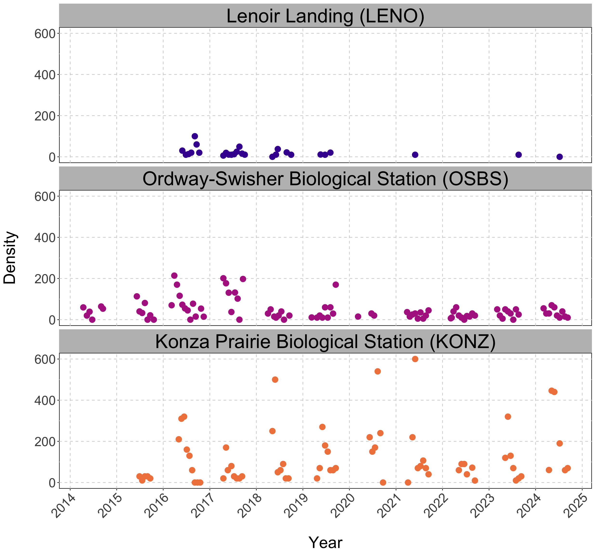
Virginia Tech
We will go through the following topics:
Motivation as Ecologists
Introducing Gaussian Processes (GPs)
Hyper-Parameters in GPs
Fitting a GP with some code
Heteroskedastic GPs (HetGPs)
Fitting a HetGP with some code
Motivating Ecological Example: Hands-On Practice
In ecology, we often have data with features such as:
Sparse and irregularly sampled time series (Time-Dependent Data).
Varies from location to location.
Often consists of several noisy observations due to sampling errors.
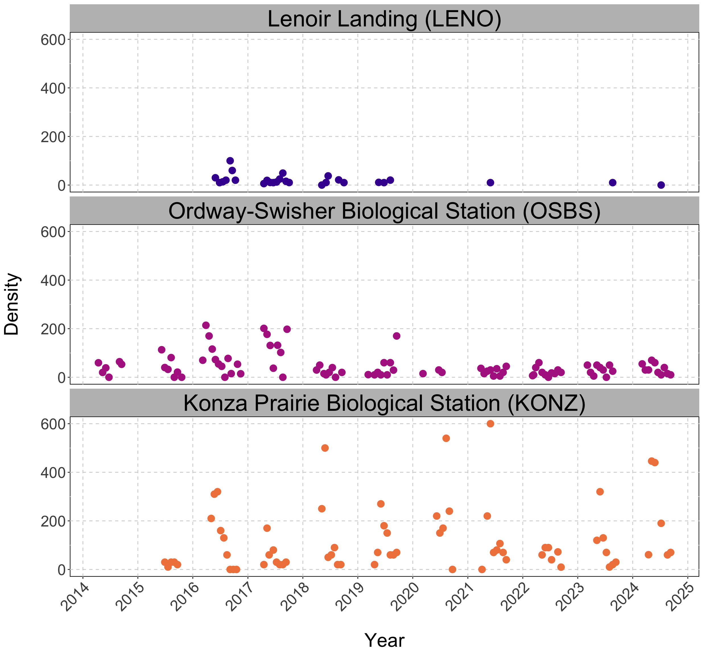
Gaussian Process (GP) models are non paramteric and flexible regression model.
Excellent for uncertainty quantification (UQ).
Suppose we have n observations Y_n corresponding to X_n inputs, then
Y_{n} \sim N (\mu, \Sigma_n)
We wish to estimate the response at a new input X_p i.e. Y_p \mid Y_n, X_n.
Note: If you set \mu = X \beta and \Sigma_n = \sigma^2 \mathbb{I}, we have a Linear Regression (LR) Setup.
For a GP, the covariance matrix, \Sigma_n is defined by a distance based kernel.
Consider,
\Sigma_n = \tau^2 C_n \quad \text{where} \quad C_n^{ij} = \exp \left( - \vert \vert x_i - x_j \vert \vert^2 \right)
The covariance structure now depends on how close together the inputs.
The covariance will decay at an exponential rate as x moves away from x'.
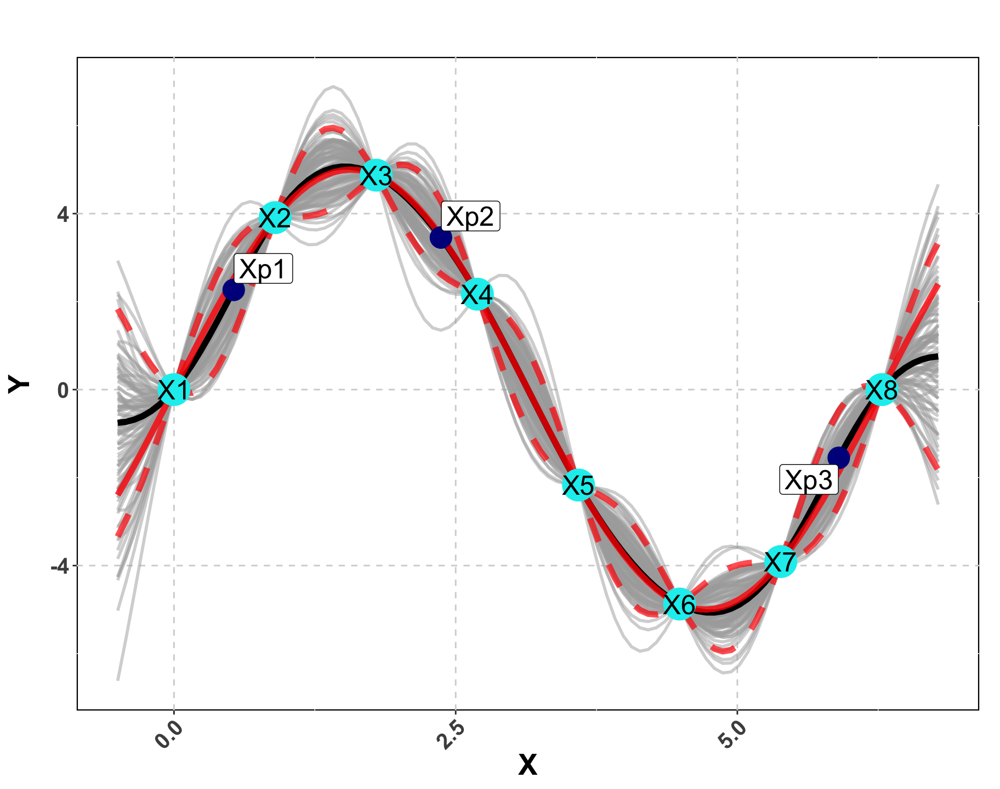
We wish to find \mathcal{Y} \vert X_n, Y_n and we know Y_n \vert X_n \sim \mathcal{N}( 0, \Sigma_n).
First we will “stack” the predictions and the data.
By properties of Normal distribution, \mathcal{Y} \vert X_n, Y_n is also normally distributed.
We can notate this as:
To make predictions at a single new location x, \Sigma(x, x) = 1 + g.
We need to focus on \Sigma so we can tune our GP appropriately.
C_\theta(x, x') = \exp{ \left( -\frac{\vert\vert x - x' \vert \vert ^2}{\theta} \right ) }
A GP is non parameteric, however, has some hyper-parameters. In this case,
\tau^2 (Scale): This parameter can be used to adjust the amplitude of the data.
\theta (Length-scale): This parameter controls the rate of decay of correlation.
g (Nugget): This parameter controls the noise in the covariance structure (adds discontinuity)
These hyper-parameters \{ \tau^2, \theta, g \} are inferred using MLE/Bayesian schemes.
A random draw from a multivariate normal distribution with \tau^2 = 1 will produce data between -2 and 2.
Now let’s visualize what happens when we increase \tau^2 to 25.
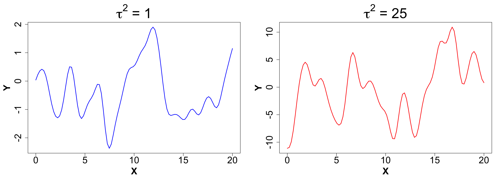
Determines how “wiggly” a function is
Smaller \theta means wigglier functions i.e. visually:
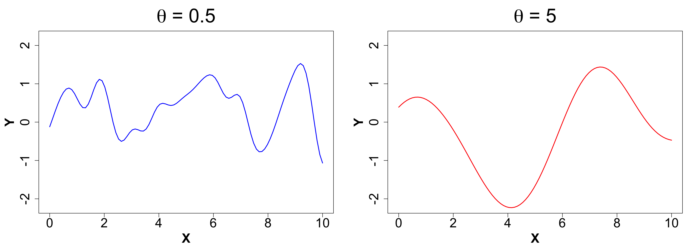
Ensures discontinuity and prevents interpolation which in turn yields better UQ.
We will compare a sample from g ~ 0 (< 1e-8 for numeric stability) vs g = 0.1 to observe what actually happens.
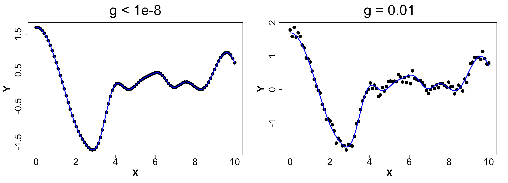
eps <- sqrt(.Machine$double.eps)
# Fit GP
gpi <- newGP(X = X, Z = obs_y, d = 0.1,
g = 0.1 * var(obs_y), dK = TRUE)
# Obtain MLE
mle <- mleGP(gpi = gpi, param = c("d", "g"),
tmin= c(eps, eps), tmax= c(10, var(obs_y)))
# Make Predictions
p <- predGP(gpi = gpi, XX = XX)
mean_gp <- p$mean
s2_gp <- diag(p$Sigma)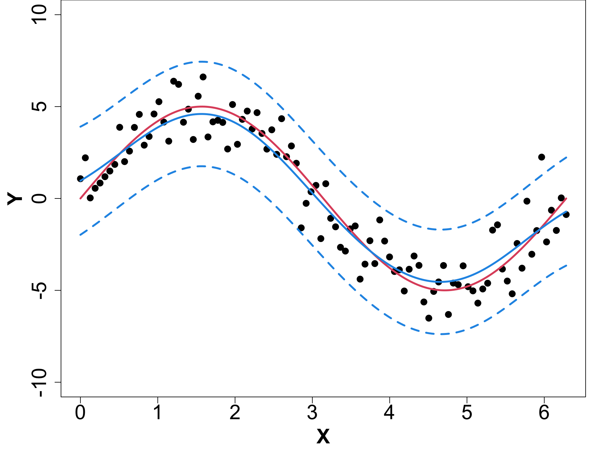
Suppose we have a d dimensional input space, X_{n \times d}. We can have one length-scale for each dimension i.e. \mathbf{\theta} = \{ \theta_1, \dots, \theta_d \}.
In this situation, we can rewrite the C_n matrix as,
C_\theta(x , x') = \exp{ \left( -\sum_{k=1}^{d} \frac{ (x_k - x_k')^2 }{\theta_k} \right )}
This is also called a Seperable GP
We will explore newGPsep, mleGPsep and predGPsep.
| Iso-week (c) | Periodicity | Transformed Density | |
|---|---|---|---|
| 2014-06-23 | 0.49 | 1.00 | 5.72 |
| 2014-07-14 | 0.55 | 0.98 | 5.18 |
| 2015-05-04 | 0.36 | 0.82 | 3.51 |
| Iso-week (c) | Periodicity | Transformed Density | |
|---|---|---|---|
| 2014-06-23 | 0.49 | 1.00 | 5.72 |
| 2014-07-14 | 0.55 | 0.98 | 5.18 |
| 2015-05-04 | 0.36 | 0.82 | 3.51 |
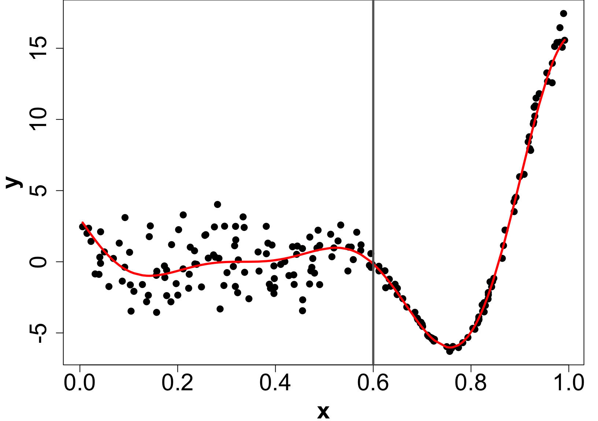
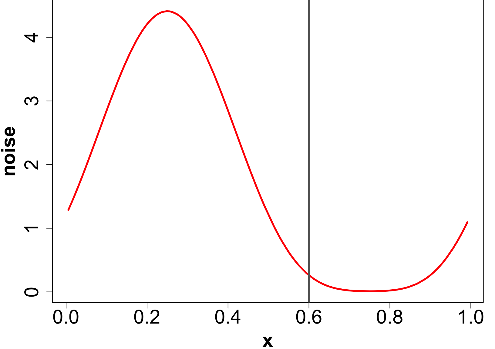
Let X_n, Y_n be the data and \mathbf{\lambda_n} be the noise level at input X_n.
In case of a hetGP, we have:
\begin{align*} Y_n & \sim GP \left( 0, \tau^2 \left( C_{\theta_Y}(X_n) + \Lambda_n \right) \right) \quad \text{where,} \quad \Lambda_n = \text{Diag}(\bold{\lambda}_n);\\ \log \bold{\lambda}_n & \sim GP \left( 0, \tau_\lambda^2 C_{\theta_\lambda}(X_n) \right)\\ \end{align*}
Note that in a regular GP: \Lambda_n = g \mathbb{I}_n. We average over the noise across the input space.
We must infer \{ \bold{\lambda}_n, \theta_Y, \theta_\lambda, \tau^2, \tau^2_\lambda \} using MLE/Bayesian schemes.
\begin{aligned} \mu(\mathcal{X}) & = \Sigma(\mathcal{X}, X_n) \Sigma_n^{-1} Y_n \\ \sigma^2(\mathcal{X}) & = \tau^2 [1 + \lambda(\mathcal{X})] - \Sigma(\mathcal{X}, X_n) \Sigma_n^{-1} \Sigma(X_n, \mathcal{X}) \\ \end{aligned}
Plug in \Sigma_n^{(\lambda)} = \tau_\lambda^2 C_{\theta_\lambda}(X_n) and Y_n = \bold{\lambda}_n in the GP predictive equations. Why?
Obtain \mu_\lambda(\mathcal{X}) and \sigma^2_\lambda(\mathcal{X}). Use \mu_\lambda(\mathcal{X}) as estimated noise level \lambda(\mathcal{X}).
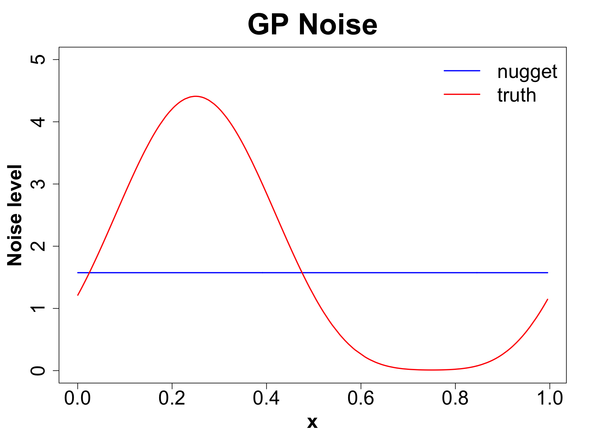
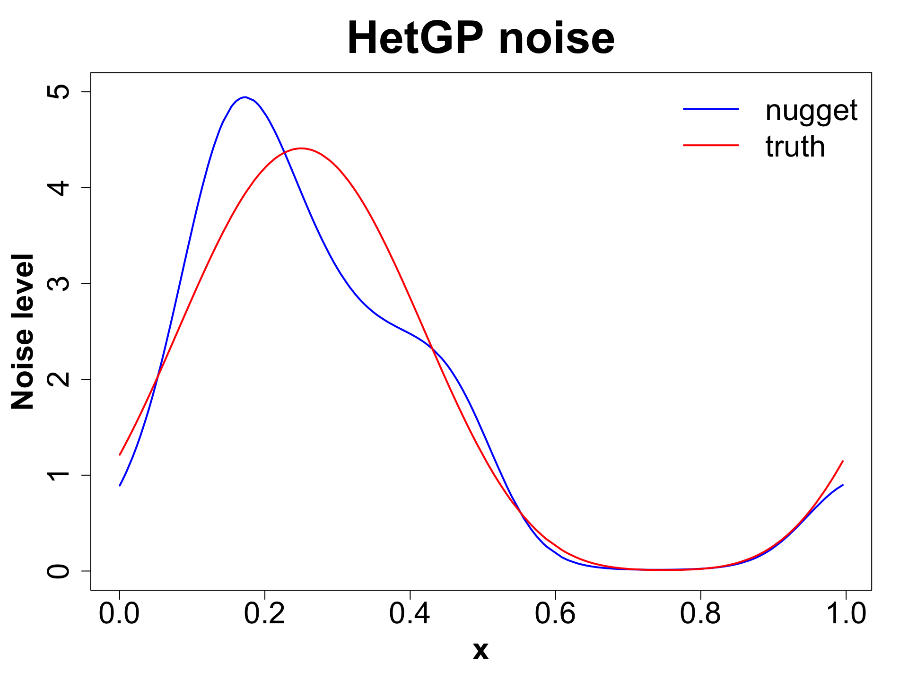
EFI-RCN held an ecological forecasting challenge NEON Forecasting Challenge (Thomas et al. 2022)
We focus on the Tick Populations theme which studies the abundance of the lone star tick (Amblyomma americanum)
Objective: Forecast tick density for 4 weeks into the future.
Sites: The data is collected across 9 different NEON plots.
Data: Sparse and irregularly spaced.
n = ~570 observations since 2014.
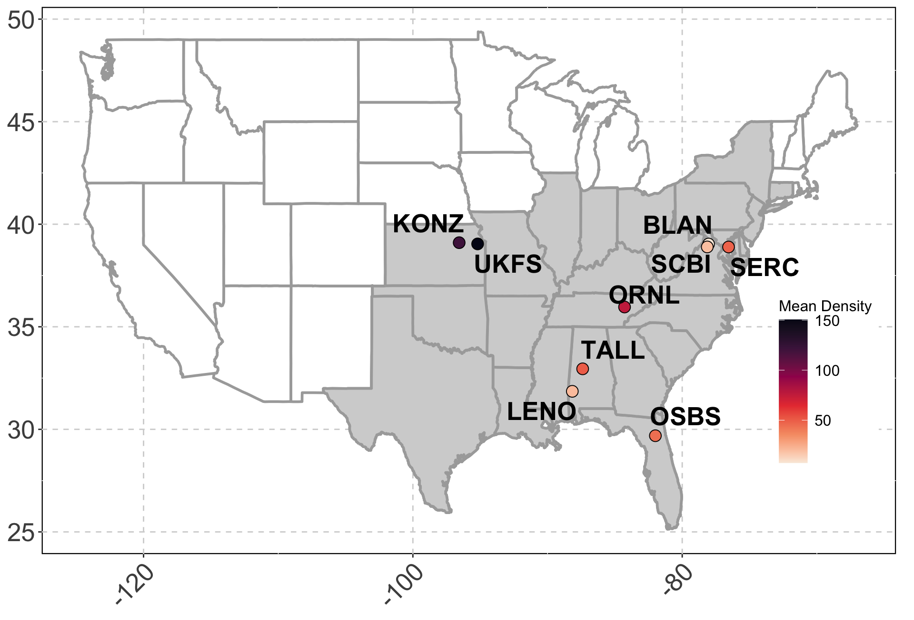
Iso-week, X_1 = 1,2,... 53.
Periodicity, X_2 = \text{sin}^2 \left( \frac{2 \pi X_1}{106} \right).
Mean Elevation, X_3.
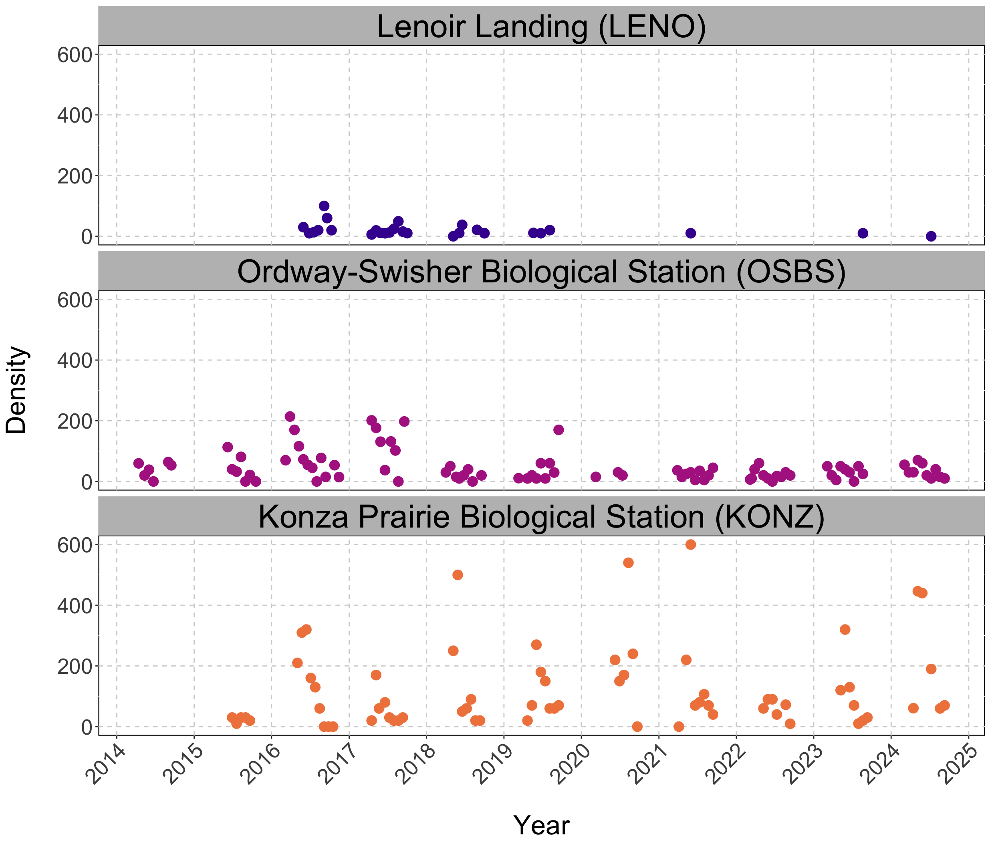